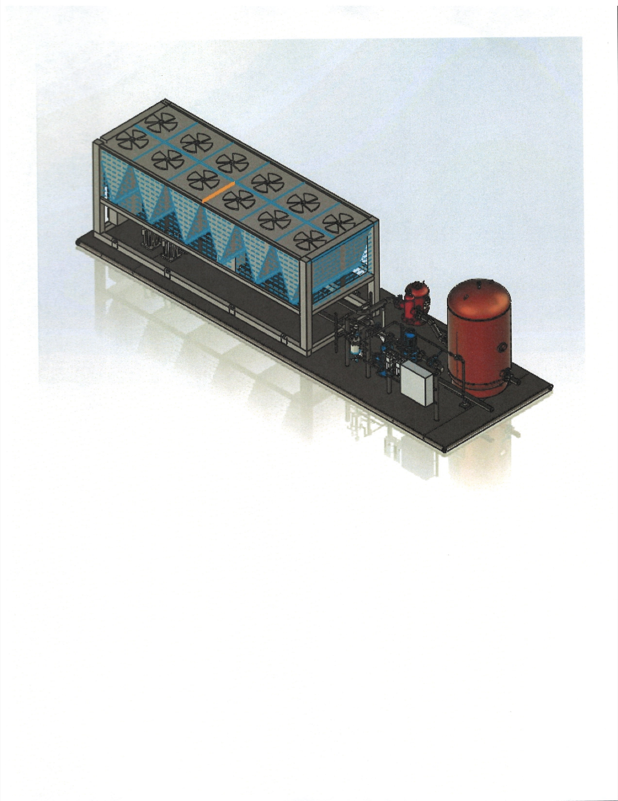

Hydronic pump packages, CAD design, FEA, and data-supported engineering decisions.
Mechanical Engineering Portfolio
Building practical systems from CAD sketches to real equipment layouts.
Junior Mechanical Engineering Student
I like projects where the model has to survive contact with reality: pumps, skids, brackets, gears, loads, tolerances, and the occasional stubborn CAD mate. My work combines mechanical design, systems thinking, analysis, and documentation so ideas can become usable engineering outputs.
30-230 tonhydronic package range studied
4.6 min FOSvalidated in structural FEA project
1620 efficiencytruss optimization result
CAD + systemsthe lane I am building toward
Featured Internship Work
Standardized Hydronic Pump Package Development
A real product-development case study from my systems design internship: packaged pumps, VFDs, tanks, documentation, configuration data, and repeatable mechanical layouts.

Wilo USA Internship | HVAC / Hydronics
Not just a CAD model - a scalable package platform.
I contributed to the development and standardization of hydronic pump package configurations for Daikin AGZ chiller systems, supporting repeatable layouts across multiple capacities.
Pump Skids
VFD Integration
BOM Support
Package Layouts
Costing Documentation
Read Internship Case Study
Project Gallery
Engineering Workbench
Each project is framed around what employers care about: problem, tools, process, results, and what I learned.


Skills
Engineering Toolkit
Tools are useful, but the real goal is turning them into decisions: what to design, how to validate it, and how to explain it clearly.
CAD & Mechanical Design
SolidWorks
Creo
Mechanical Design
Assemblies
Design for Manufacturing
3D Printing
Systems & Analysis
HVAC Systems
Pump Package Layout
Hydronic Systems
ANSYS FEA
Engineering Analysis
Technical Documentation
Programming & Data
MATLAB
Python
Data Processing
Machine Learning
Simulation Logic
Courses & Development
Harvard CS50x
Kaplan FE Mechanical Review
Pumps + Hydronics
Chillers + Heat Transfer
Resume
Resume
Embedded here for quick review, with a download option if an employer wants the PDF.
Contact
Let's talk engineering.
If something here connects with your team's work, I'd be glad to talk.
LinkedIn
Email: azizm0304@gmail.com